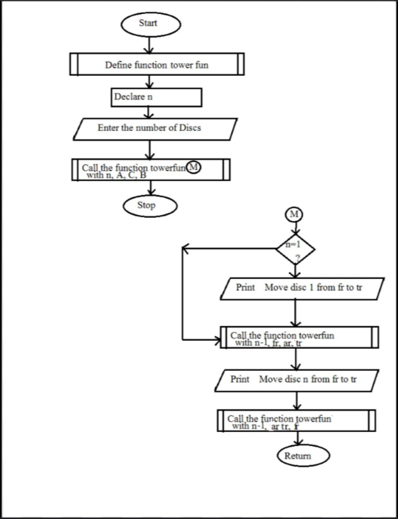

Introduction to Tower of Hanoi
The Tower of Hanoi is a famous mathematical puzzle that was first introduced by the French mathematician Édouard Lucas in 1883. It consists of three vertical pegs and a set of disks of varying sizes. The disks are stacked in decreasing size on one of the pegs, with the largest disk at the bottom and the smallest disk at the top.
The objective of the Tower of Hanoi problem is to move the entire stack of disks from the initial peg to another peg (referred to as the destination peg), following a set of specific rules
Key Concept
- The Tower of Hanoi is a recursive problem that can be broken down into smaller sub-problems. It requires careful planning to move the disks to the destination peg using an auxiliary peg while adhering to the rules.

Flowchart:

Video Reference:
Applications :
- 1. Recursive thinking: It’s an excellent exercise for understanding and teaching recursive algorithms.
- 2. Algorithmic efficiency: The problem can be used to analyze exponential time complexity.
- 3. Network optimization: In computer networks, the Tower of Hanoi algorithm can help solve routing and storage problems.
- 4. Game theory: Variants of the problem, like the Reve's puzzle (with four pegs), offer more complex challenges and can model more intricate systems.